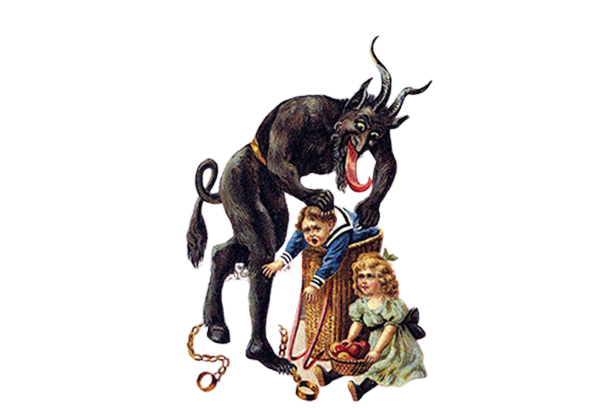

BMJ Productions presents....
Christmas
When you’re talking about December holidays, you can’t forget Christmas. Christmas is an annual festival commemorating the birth of Jesus Christ, observed primarily on December 25 as a religious and cultural celebration among billions of people around the world. A feast central to the Christian liturgical year, it is preceded by the season of Advent or the Nativity Fast and initiates the season of Christmastide, which historically in the West lasts twelve days and culminates on Twelfth Night.
Christmas Day is a public holiday in many countries, is celebrated religiously by a majority of Christians, as well as culturally by many non-Christians, and forms an integral part of the holiday season organized around it. The traditional Christmas narrative recounted in the New Testament, known as the Nativity of Jesus, says that Jesus was born in Bethlehem, in accordance with messianic prophecies. When Joseph and Mary arrived in the city, the inn had no room and so they were offered a stable where the Christ Child was soon born, with angels proclaiming this news to shepherds who then spread the word.
Enormously popular in many places, Christmas involves a host of different traditions in the many countries where it’s celebrated. For example: In Mexico, the celebration of Las Posadas from December 16 to December 24 honors Mary and Joseph’s search for an inn. Every night, families go to a different home and ask for shelter. Once they’re let in, they celebrate together! In India, people attend special midnight masses and make kheer, a sweet pudding, for neighbors and family. Norwegians celebrate with their own kind of rice pudding, called riskrem, on Christmas Eve.
Brazilian children leave a sock near the window for Bom Velhinho (a Brazilian name for Santa Claus). If he finds it, they get a present! In Ireland, some people take a cold swim in the ocean on Christmas morning!
_________________________________________________________________________
In the United States, we associate Christmas with ham or figgy pudding, but in Japan, it’s all about Kentucky Fried Chicken.
An estimated 3.5 million Japanese families eat fried chicken on Christmas Eve thanks to a marketing stunt by KFC in the 1970s called Kurisumasu ni wa Kentakkii (“Kentucky for Christmas”).
Christians make up a very small percentage of the Japanese population, so this campaign made up for a lack of Christmas holiday traditions. The KFC Christmas Meal is so popular, many customers pre-order their dinners — which include fried chicken, cake and champagne — months in advance.
_________________________________________________________________________
Krampus

Santa’s worse half is a hairy, devil-like creature called Krampus. Legend has it that while Santa brings toys to “nice” children, Krampus’ job is to punish kids on the “naughty” list.
Mostly he just frightens the children with his beastly looks, but it’s said that he throws particularly bad children into his sack, or chains them up in his basket and carts them off to Hell.
People in Austria and neighboring countries often dress up as Krampus in early December and wander the streets to scare children.
_________________________________________________________________________